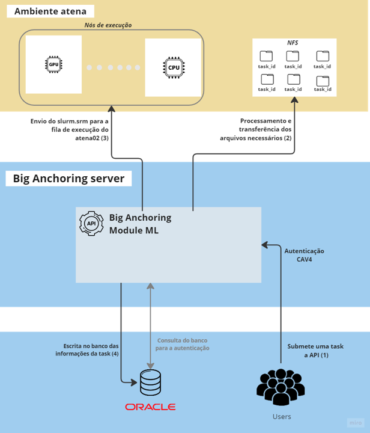

Exemplos de Uso
Estes exemplos ilustram as principais funcionalidades dessa biblioteca em desenvolvimento. O objetivo dessa biblioteca é simplificar o acesso aos serviços de submissão de tarefas em diferentes infraestruturas, oferecidas pela API do Big Anchoring Machine Learning Module. A figura abaixo ilustra de maneira simplificada como o serviço está atuando em relação à infraestrutura do atena02.
{kind=link}
Nos exemplos a seguir, vamos explorar os principais procedimentos para a gestão de tarefas dentro do cluster. Primeiramente, veremos como realizar a submissão de uma tarefa, seguido pelo processo de obtenção do status da task que foi previamente submetida. Em seguida, aprenderemos a recuperar o run_id do MLflow utilizado na task, se aplicável. Por fim, demonstraremos como cancelar uma tarefa que já foi submetida.
Submissão de uma task ao atena02
from biganchoring_ml_module import Submitter
import time
import json
# Create a Submitter object
sb = Submitter( dataset_name="Dataset_name",
dataset_file="test_data.zip",
processor_file="test_processor.zip",
runner_location="atena02", execution_mode="mlflow", experiment_name="test_lib",
execution_command="mlflow run measurements_regression_training_right",
tracking_uri="http://npab1420.petrobras.biz:5000/",
instance_type="gpu", account="twinscie", n_estimators=2, random_state=42)
submission_response = sb.submit_task()
response_data = json.loads(submission_response.text)
if response_data:
job_id = response_data.get("job_id")
task_id = response_data.get("id")
experiment_name = response_data.get("experiment_name")
instance_type = response_data.get("instance_type")
print(f"Job ID:{job_id}")
print(f"ID: {task_id}")
print(f"experiment_name: {experiment_name}")
print(f"instance_type: {instance_type}")
Obtendo Satus de uma task
from biganchoring_ml_module import TaskHandler
import json
task_id = input('Entre com o seu task_id: ')
task = TaskHandler(task_id)
status_response = task.get_job_status()
status_data = json.loads(status_response.text)
print(status_data)
Obtendo o MLFlow run_id de uma task
from biganchoring_ml_module import TaskHandler
import json
task_id = input('Entre com o seu task_id: ')
task = TaskHandler(task_id)
status_response = task.get_job_run_id()
status_data = json.loads(status_response.text)
print(status_data)
Cancelando uma task
from biganchoring_ml_module import TaskHandler
import json
task_id = input('Entre com o seu task_id: ')
task = TaskHandler(task_id)
status_response = task.cancel_task()
status_data = json.loads(status_response.text)
print(status_data)